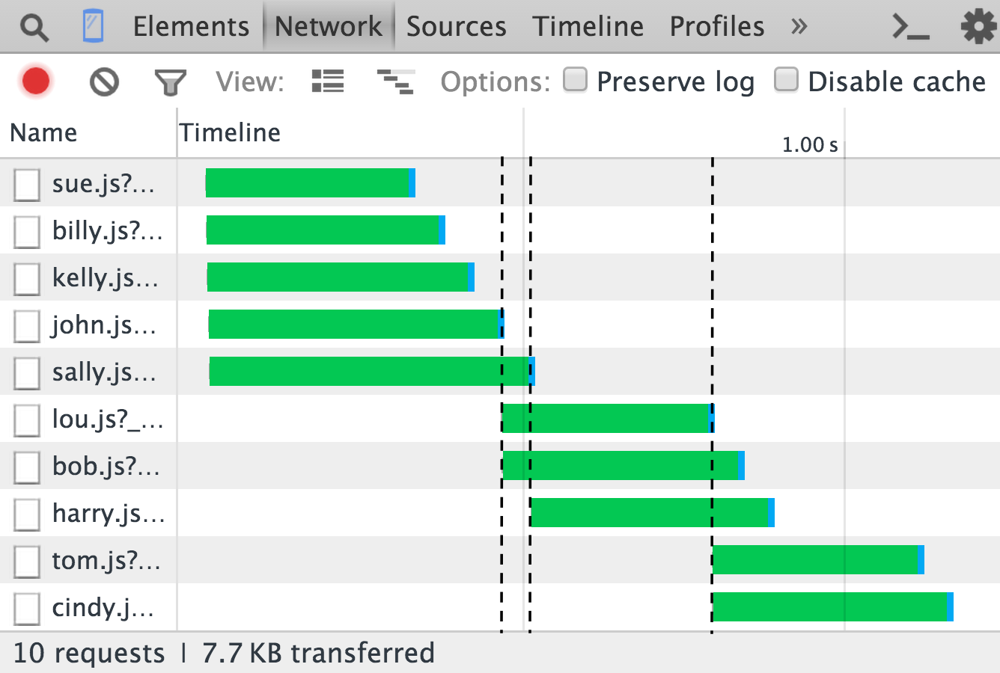

AMD_CORE
Welcome to my core page, this loads jQuery, then polyfills Promises, and loads other required scripts. Open the console to experiment.
Find full documentation and code at: https://github.com/adussaq/amd_core
Fun example of amd_core.require, network timeline of this is pictured below.
amd_core.require({
async: ["name/sue.js", "name/billy.js", "name/kelly.js"], //We do not care the order we are loaded
ordered: [ //Each one of these will start loading at their base node at the same time
// In otherwords John and Sally will start loading immediately, once john is done
// Lou, and bob will start loading, etc.
[
"name/john.js",
"name/lou.js", // I cant load without john
"name/tom.js" // I cant load without john and lou
],
[
"name/john.js", // This will still only be loaded once
"name/bob.js" // I cant load without john
],
[
"name/john.js", // This will still only be loaded once
"name/lou.js", // This will still only be loaded once, but I cant load without john
"name/cindy.js" // I cant load without john and lou
],
[
"name/sally.js",
"name/harry.js" //I can't load without sally
]
],
callback: function (x) {
for (var url in x) {
//Utilizes the promises to display results
if (x.hasOwnProperty(url)) {
x[url].promise.then(function (name) {
console.log(name.replace(/name\/|\.js/g, "") + ' is here!');
}).catch(function (x) {
console.error(x);
});
}
}
}
});
At 50Kbps network timeline graph.
